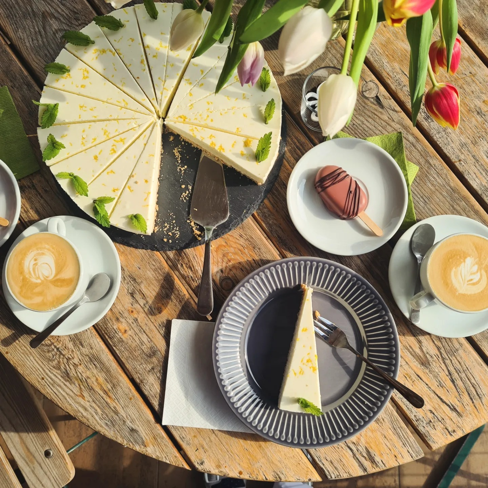

O nás
Vítejte v kavárně Terasa, kde na vás čekají domácí dorty, slané i sladké zákusky a další lahůdky. Nacházíme se poblíž parku, naše útulná terasa nabízí klidné prostředí pro ochutnávku čerstvě upečených dobrot.
Naše menu

Naše dezerty jsou vždy čerstvé a pečené z vysoce kvalitních ingrediencí. Používáme sezónní ovoce, poctivé máslo a pravou čokoládu, abychom dosáhli dokonale vyvážené chuti. Ať už si vyberete sladké zákusky nebo slané varianty, každý kousek je připraven s láskou a pečlivostí.
Dopřejte si vydatný brunch nebo teplou polévku v průběhu dne. Základem našich pokrmů je čerstvá sezónní zelenina, kvalitní vejce a ručně vyráběné pečivo. Vše připravujeme s důrazem na harmonii chutí a pečlivou přípravu, abychom vám poskytli nezapomenutelný gastronomický zážitek.
Dorty

Naše ručně malované a modelované dorty jsou opravdovým uměleckým dílem. Každý dort vzniká s maximální péčí a láskou k detailu. Naše majitelka je talentovaná umělkyně, která dokáže vytvořit rozkošné figurky oblíbených dětských hrdinů i nápadité motivy podle vašich představ. To vše z prvotřídních surovin pro dokonalý vzhled i chuť.
Pro slavnostní příležitosti, jako jsou svatby či významné jubilejní oslavy, nabízíme svatební a vícepatrové dorty na míru. Vše tvoříme s využitím kvalitních krémů, jedlých květů a ručně vyráběných ozdob, aby byl dort stejně krásný na pohled jako lahodný na ochutnání.
Kontaktujte nás
Adresa: Fügnerova 471 388 01 Blatná
Telefon: 602 479 522
Email: terasa.blatna@gmail.com